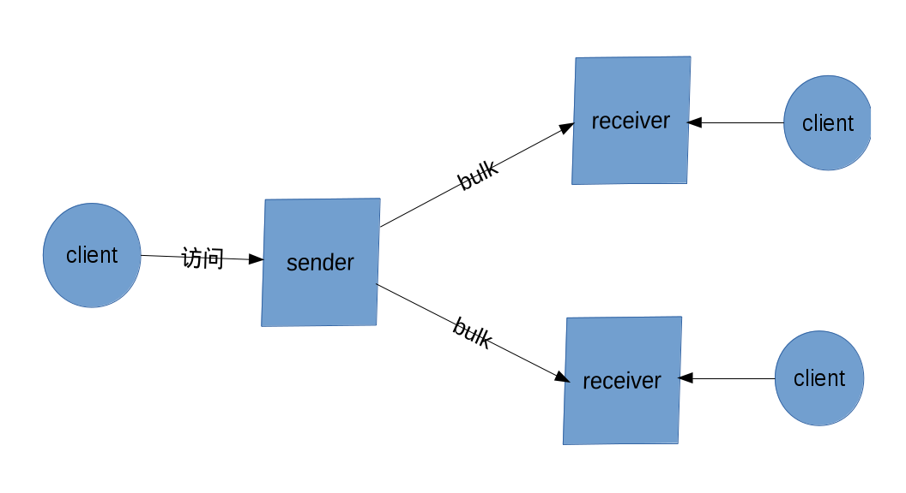

1. 简介¶
1.1. 概述¶
django_sim是一套标准化管理和推送资源的SDK, 其基于SCIM方案为资源定义模板， django-oauth-toolkit进行资源权限管理，djangorestframework进行资源推送和接口定义。
1.2. 资源分布¶
django_sim资源分布如下,详细结构在第五章 资源结构 介绍。
访问资源:
SimResource SimResource是一个资源适配器，其他访问资源一对一外键SimResource，从而其他类只需要 外键SimResource，就可以使用django_sim所有的访问资源。 SimUser 用户, 可作为认证User替换django默认认证User SimTeam 用户组, 一个Team下面可以包含多个User和Team。Team对应公司的各层组织架构 SimRole 用户角色, 用户角色属于一个Team。Role主要时为了给各平台系统基于Role来进行权限控制。 比如在CSIS产品部时一个Team，下面可以创建一个CMO的Role。 SimProject Project是一个命名空间，属于一个User或一个Team,或一个Role。主要是为了中心各平台使用统一的项目名称。推送资源:
SimBulk django_sim sender基于bulk来推送资源, 默认bulk大小是1024条记录，第一次全量同步资源到 receiver，第二次以后增量同步资源到receiver。sender在每次推送前会取receiver的最后一次 结束bulk来作为参考进行推送，保证推送后reciver数据全量。 bulk有四种类型: 全量同步bulk: 作为sender第一次全量同步资源到receiver的中间过程bulk 全量同步结束bulk: 作为sender第一次全量同步资源到receiver的结束bulk 增量同步bulk: 作为sender增量同步资源到receiver的中间过程bulk 增量同步结束bulk: 在sender增量同步资源到receiver的结束bulk认证资源:
SimAuth 每个django_sim receiver在django_sim sender注册一条Auth记录，注册成功后, receiver方自助完成sender到receiver的认证，注册完成后，sender自动同步资源到receiver
1.3. 功能¶
资源同步
django_sim receiver使用django-oauth-toolkit搭建基于Authorization code认证 的app来生成认证信息，然后receiver提交认证信息到django_sim sender进行注册， 注册完成后，receiver自助完成认证, 认证完成后, sender可定时同步资源到receiver资源访问
django_sim reicever和sender都可以使用django-oauth-toolkit搭建基于 client credentials认证的app来生成认证信息，client可以使用认证信息访问django_sim的 API来获取相关资源信息
资源管理
django_sim支持通过django admin页面对资源进行搜索和管理认证User替换
替换django默认user，使用django_sim的SimUser来进行权限认证tof认证
提供tof django认证backend和tof djangorestframwork认证backend实现tof认证